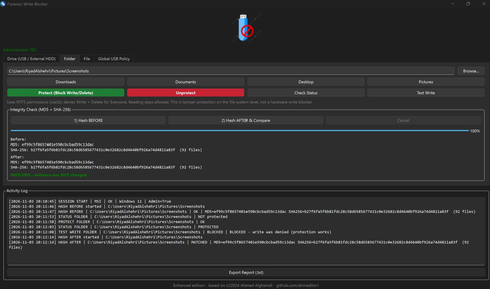

Riyad
Alshehri
Cybersecurity specialist in SOC analysis and digital forensics and incident response.
- Focus
- SOC and DFIR
- Certified
- eCIR, eJPTv2, CAPT, Security+
- Training
- Tuwaiq Academy, in progress
- Location
- Saudi Arabia
About
I focus on SOC analysis and digital forensics. On every case I start by preserving and hashing the evidence, then work through memory, disk, network and mobile artifacts to rebuild what happened step by step. I only report what the evidence proves.
I'm currently in the Advanced Cyber Crime and Digital Forensics Bootcamp at Tuwaiq Academy. Before that I supervised enterprise IT and data center operations, running Windows Server and Active Directory and hardening servers and network devices. I hold a B.Sc. in Computer Engineering from Umm Al-Qura University.
Background
- Advanced Cyber Crime and Digital Forensics BootcampTuwaiq Academy, Sep 2026 to present
- IT Unit SupervisorAlsalam ASC, Makkah, Nov 2024 to Sep 2025
- IT SpecialistAlsalam ASC, Makkah, Mar 2024 to Nov 2024
- B.Sc. Computer EngineeringUmm Al-Qura University, 2023
- Technical Support Traineestc, Abha, Jun 2022 to Aug 2022
Certifications
Each Verify button opens the issuer's own record, so you can confirm it yourself.
-
eCIRCertified Incident Responder
-
eJPTv2Junior Penetration Tester
-
CAPTCertified Associate Penetration Tester
-
Security+CompTIA Security+ CE
-
Cybersecurity EssentialsCourse certificate
-
Technical SupportTraining certificate
Tools I built
KeepTrace
Work in progressOne place to run forensic tools and keep a clean case around them. You open a case, add evidence, run tools against it, and KeepTrace keeps the record.
- Every evidence file gets a SHA-256 hash and an entry in the case
- Each tool run is saved with its command, output and the evidence it used
- An activity log records every action in the case
- Findings export to a timeline in CSV and JSON
- A tool manager for TShark, Volatility 3, YARA, The Sleuth Kit, RegRipper, ExifTool and more, installing only after you approve the command
- The framework checks its own files against an Ed25519-signed manifest at start and falls back to a safe mode if anything changed
Python, Linux
kali@kali:~$ keeptrace [✓] Manifest signature verified. [✓] Framework integrity verified. ● │ Evidence │ ●───────────────◎───────────────● Network Disk │ Memory ● KEEPTRACE FRAMEWORK Digital Forensics & Cyber Defense Created by Riyad Alshehri MAIN MENU 1. Network Forensics 2. Disk & File System Forensics 3. Memory Forensics 4. Malware Analysis 5. Windows Forensics 6. Linux Forensics 7. Endpoint & Incident Response 8. Digital Investigation 9. Tool Manager 10. Case Workspace Select:
Forensic Write Blocker
Enhanced editionA Windows tool that locks evidence against changes, then proves nothing changed with hashes before and after. I extended Ahmed Alghamdi's WriteBlocker, which set a USB drive to read-only, into a full evidence-protection workflow.
- Protects a whole drive, a folder or a single file
- A registry policy makes every USB connected afterwards mount read-only from the first second
- MD5 and SHA-256 before and after, with an automatic match or mismatch result
- Raw hashing of every sector on a physical disk
- A Test Write button that proves the protection is active
- Activity log with time, user and computer, and an exportable session report
Python, PyQt6, PowerShell, Windows

Investigation reports
16 reports from hands-on labs and cases, each one written by me. Every file is listed with its SHA-256, so you can check the copy you download is the one I published. Click a hash to copy it.
Memory forensics
-
Open PDF
Case INC-2026-DFIR-8941
Windows 7 memory image. Found two user sessions, carved an image file out of RAM, pulled a hidden file with stegseek and recovered a deleted file from its resident MFT record.
Tools Volatility 3, stegseek, dd, strings
-
Open PDF
Case INC-2026-DFIR-7324
Spotted a fake 32-bit NOTEPAD.EXE running from a user's Videos folder, decoded a Base64 archive name and located the archive in memory.
Tools Volatility 3 (pstree, filescan), base64
-
Open PDF
Case INC-2026-DFIR-5082
Locked the evidence read-only, then traced an open KeePass database and decoded a Base64 value hidden in a cmd.exe environment variable.
Tools Volatility 3 (envars, filescan), chmod 444
Disk and Windows forensics
-
Open PDF
FTK cases INC-6792 and INC-7340
Verified the E01 image hash, found a deleted Kali VM disk and proved the system clock was rolled back by ordering Event Log records.
Tools FTK Imager, PECmd, Windows Event Logs
-
Open PDF
USB device forensics
Traced a USB stick end to end: serial number from the registry, connect time from Event ID 6416, opened files from LNK files, Jump Lists and ShellBags.
Tools Registry, Event Viewer, JLECmd, SBECmd
-
Open PDF
MBR vs GPT
How each partition scheme boots, how many partitions and how much disk it supports, and where it stores partition data.
Network forensics
-
Open PDF
Emotet traffic analysis 4
Infected host pcap with 19,835 packets. Identified the victim, flagged traffic on non-standard ports 447 and 449 and reviewed downloaded files.
Tools Wireshark, capinfos
-
Open PDF
Emotet traffic analysis 5
Infected host pcap. Identified the victim from NetBIOS traffic, then worked through DNS, HTTP and TLS.
Tools Wireshark, capinfos
Mobile and app forensics
-
Open PDF
Android case in Magnet AXIOM
ASUS Android image. Rebuilt the user's movements from calendar events, Chrome searches and Google Maps coordinates with correct timezone handling.
Tools Magnet AXIOM Examine
-
Open PDF
Drone forensics
Pulled DJI flight records from an iOS backup, analysed the flight in AirData and compared the flight path against the GPS data in the drone's media.
Tools iMazing, AirData, Google Earth
-
Open PDF
Android insecure storage
Reverse engineered AndroGoat and showed credentials saved in plain text through SharedPreferences, with debuggable and allowBackup enabled.
Tools JADX-GUI
Web security
-
Open PDF
SQL injection and the fix
Bypassed a PHP login and dumped users with UNION injection on a local lab, then fixed the code with prepared statements.
Tools XAMPP, PHP, MySQL
Cryptography and ransomware
-
Open PDF
Ransomware and cryptography
Researched real ransomware attacks such as SafePay on Ingram Micro, then decrypted AES-256-CBC files and analysed an RSA-wrapped AES key.
Tools OpenSSL
-
Open PDF
Diffie-Hellman key exchange
Two parties agree on a shared secret, derive an AES-256 key and exchange an encrypted file, then a man-in-the-middle scenario.
Tools OpenSSL
-
Open PDF
DES vs AES
Encrypted and decrypted files with both and compared key size, security, speed and where each is used today.
Tools OpenSSL
Threat intelligence
-
Open PDF
Attack on water infrastructure
Mind map of the CyberAv3ngers attack on Unitronics PLCs at US water facilities through default passwords, with risks and mitigations.
Get in touch
I'm looking for SOC and DFIR roles. The quickest way to reach me is email or LinkedIn.